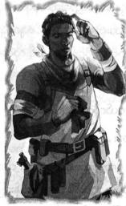

ဗုံးများနှင့် ပင်လယ်ခရီးထွက်ခြင်း
ကားရှေ့စက်ဖုံးပေါ်သို့ ပက်ဂါဆပ်စ်မြင်းပျံ ဆင်းသက်လာချင်းနှင့်အတူ ကမ္ဘာပျက်မည့် နေ့စွဲများက စတင်လာ ခဲ့သည်။ ထိုအချိန် မတိုင်မီအထိ ပါစီ့ဘဝမှာ ပျော်ပျော်ရွှင်ရွှင် ရှိနေ၏။ နောက်တစ်ပတ်မှ ဆယ့်ခြောက်နှစ် ပြည့်မည် ဖြစ်ရာ အတိအကျ ဆိုရလျှင် ကားမောင်းခွင့် မရှိသေး။ သို့သော် အမေနှင့် အမေ့အမျိုးသား ဖြစ်လာသူ ပေါလ်တို့က ပါစီ နှင့် ရေချယ်လ်တို့ကို တောင်ဘက်ကမ်းခြေသို့ လိုက်ပို့ပေးရင်း ပေါလ်က သူ့ကားကို ခေတ္တမောင်းခွင့် ပေးထားခြင်း ဖြစ်သည်။
ယခုထက်ပို၍ အန္တရာယ်များသော အလုပ်များစွာကို လုပ်လေ့ရှိသည့် ပါစီ့အား အနီးအနား ကားမောင်းရန် ပေါလ် က ခွင့်ပြုခဲ့၏။ ရေချယ်လ်မှာ ရေကူးဝတ် ပေါ်တွင် အဖြူရောင် ဘလောက်စ်အင်္ကျီကို ထပ်ဝတ်ထားပြီး ဂျင်းဘောင်းဘီ၊ တီရှပ်ဖြင့် အမြဲမြင်နေရသောပုံစံနှင့် လုံးဝခြားနားလျက်ရှိသည်။
“ဟိုနားမှာ ရပ်ပါလား ..”
ပင်လယ်ကြီးကို စီး၍မြင်နေရသော တစ်နေရာတွင် ကားကို ရပ်လိုက်ကြသည်။ ပင်လယ်မှာ ပါစီ့ အတွက် အကောင်းဆုံးနေရာ တစ်ခုဖြစ်ပြီး ယနေ့တွင် ပို၍ပင် အစိမ်းရောင်သမ်းကာ ဖန်သားကဲ့သို့ ကြည်လင်လျက်ရှိသည်။ ပါစီ့ အဖေ ပိုဆိုက်ဒွန်က သူ့အတွက် တမင်တကာ လှိုင်းငြိမ်အောင် လုပ်ပေးသကဲ့သို့ ထင်ရ၏။
ရေချယ်လ်က ပြုံးရင်း မေးလိုက်သည်။
“ငါ ဖိတ်တာ နင် ဘယ်လိုထင်သလဲ …”
“ဪ … အဲဒါလား ..”
စိတ်လှုပ်ရှားဟန် ဆောင်ထားသော်လည်း ထိုကိစ္စနှင့် ပတ်သက်၍ ပါစီ မည်သို့ တွေးရမည်ကို မသိပေ။ သူမ၏ မိသားစု အပန်းဖြေခရီးထွက်မည့် စိန့်သောမတ်စ်ရှိ အိမ်သို့ ဖိတ်နေခြင်းဖြစ်သည်။ ပါစီ့ မိသားစုအတွက် အပန်းဖြေခရီး ဆိုသည်မှာ လောင်းအိုက်စ်လန်၌ပင် အခန်းတစ်ခန်းငှား၍ ပီဇာ ဝယ်စားခြင်းသာ ဖြစ်၏။ ရေချယ်လ့် မိဘများကမူ သူ့ကို ကာရေဘီယန်သို့ အလည်ခေါ်နေခြင်းဖြစ်သည်။
ထို့အပြင် ပါစီအနေဖြင့် အပန်းဖြေခရီး ထွက်ရန် အတော်ကြီး လိုအပ်နေသော ကာလဖြစ်သည်။ ယခု နွေရာသီ မှာ ပါစီ့ အတွက် အခက်ခဲဆုံးသော ကာလ ဖြစ်ပြီး ရက်အနည်းငယ် အနားယူခွင့် ရလျှင်ပင် မဟာကံထူးခွင့်ကြီးဖြစ်၏။
ပြောရလျှင် ဤရက်ပိုင်းအတွင်း၌ ထူးထူးခြားခြားကိစ္စများ စတင်လာနိုင်ပြီး ပါစီမှာ အချိန်မရွေး သင်တန်းမှ တာဝန်ပေးခြင်း ခံရနိုင်သည်။ ပိုဆိုးသည်က နောက်တစ်ပတ်တွင် သူ့မွေးနေ့ ရှိနေပြီး ဟောကိန်းအရဆိုလျှင် ထိုနေ့၌ ဆိုးဆိုးဝါးဝါးကိစ္စများ ဖြစ်ရန်ရှိ၏။
“ပါစီ … အချိန်အခါ မဟုတ်တာ ငါ သိပါတယ် … ဒါပေမဲ့ နင့်အတွက် ဘယ်အချိန် ရှိသေးလို့လဲ …”
သူမ၏ စကား မမှားပေ။
“ငါသွားချင်ပါတယ် … ဒါပေမဲ့ …"
“စစ်ပွဲကြောင့်လား …”
ပါစီ ခေါင်းညိတ်ပြလိုက်သည်။ မပြောချင်သော်လည်း ရေချယ်လ် သိပြီးသား ကိစ္စပင်။ ရေချယ်လ်မှာ သာမန် လူများနှင့်မတူဘဲ မြူကို ဖောက်ထွင်းမြင်နိုင်၍ မိစ္ဆာများကို မြင်နိုင်ခဲ့သည်။ တိုက်တန်နှင့် မိစ္ဆာများကို ရင်ဆိုင်နေသည့် နတ်သွေးနှောသူအချို့ကိုလည်း တွေ့ဖူးသူဖြစ်သည်။ ပြောရလျှင် နွေရာသီက ပုံစံအသစ်နှင့် ပြန်လည် ရှင်သန်လာသော ခရိုနော့စ်အား ဆံညှပ်ကလစ်ဖြင့် ပစ်ပေါက်ခဲ့သဖြင့် သူမ၏သတ္တိကို ပါစီ မလေးစားဘဲ မနေနိုင်ချေ။
ရေချယ်လ်က ပါစီ့လက်ကို ဆွဲကိုင်ရင်း …
“စဉ်းစားထား … ဟုတ်လား … ငါတို့လည်း မသွားဖြစ်သေးပါဘူး … အဖေက …”
သူမ စကား မဆက်နိုင်။
“နင့်ကို စိတ်ညစ်အောင် လုပ်နေပြန်ပြီလား …”
စိတ်ပျက်လက်ပျက်နှင့် ရေချယ်လ် ခေါင်းခါရင်း ...
“ငါ့ကို သဘောကောင်းပြနေတယ် … ပိုဆိုးတာပေါ့ … သူသွားစေချင်တဲ့ ကျောင်းကို သွားအောင် … ငါ့ကို အလိုလိုက်ရင် ငါ အလျှော့ ပေးလိမ့်မယ်လို့ သူ ထင်နေတယ် ...”
“အဲဒါကြောင့် နင်တို့ အပန်းဖြေခရီးမှာ ငါ့ကို လိုက်ခွင့်ပေးတာ မဟုတ်လား …”
“အင်း … ဒါပေမဲ့ နင် ပါလာရင် ငါ့အတွက် အများကြီး အဆင်ပြေလိမ့်မယ် … ငါနင့်ကို ပြောချင်တာလည်း ရှိတယ်”
“ဘာလဲ …”
ရေချယ်လ် နှုတ်ခမ်းကို တင်းတင်းစေ့လိုက်ရင်း …
“ခဏထားလိုက်ပါဦး … သာမန်လူတွေလိုပဲ ငါတို့ကိုယ်ကိုယ် သဘောထား ကြည့်ရအောင်… ပင်လယ်ကို အပန်းဖြေ ခရီး သွားကြမှာပဲ … အတူတူ သွားရတာ ကောင်းပါတယ်”
တစ်စုံတစ်ခုကြောင့် ရေချယ်လ် စိတ်ရှုပ်နေမှန်း ပါစီ သိသော်လည်း သူမမှာ ဟန်ဆောင်ပြုံးနေ၏။ နေရောင် အောက်တွင် ရေချယ်လ့် ဆံပင်များမှာ မီးတောက် နေသကဲ့သို့ ရှိသည်။ ဤနွေရာသီတွင် ရေချယ်လ်နှင့် မကြာမကြာ ဆုံဖြစ်၏။ မရည်ရွယ်သော်လည်း သင်တန်းမှ ပြဿနာများ ကြီးလာသည်နှင့်အမျှ ရေချယ်လ်နှင့် မကြာခဏ ချိန်းတွေ့ ဖြစ်နေပြီး စိတ်ပြေလက်ပျောက် ဖြစ်စေ၏။ မိစ္ဆာများနှင့် အမြဲ နပန်းလုံးနေရချိန်တွင် သာမန်လူများစွာ ရှိနေသေးကြောင်း သတိပြန်ရစေသည်။
“ဟုတ်ပြီလေ… ပုံမှန်နေ့ခင်းမှာ ပုံမှန်လူနှစ်ယောက် တွေ့ကြတယ်ပဲ ထားပါတော့ ....”
“အဲဒီ ပုံမှန်လူနှစ်ယောက် ကြိုက်နေကြတယ်ဆိုရင် ခပ်တုံးတုံးကောင်လေးက ကောင်မလေးကို နမ်းဖို့ ဘာလို မလဲ …”
အပိုလို၏ မြင့်မြတ်သော နွားများသဖွယ် ခံစားရပြီး ပါစီ့ တစ်ကိုယ်လုံး နီရဲသွား၏။
“အဲ … အင်း ..”
ရေချယ်လ့်အကြောင်း မတွေးမိပါဟု ပြောလျှင် ညာရာကျပေလိမ့်မည်။ ပါစီ သိသော မိန်းကလေး အတော် များများထက် ရေချယ့်လ်အနားတွင် နေရသည်က အဆင်ပြေ၏။ ဘာပြောရမလဲ ဂရုစိုက်စရာ မလိုသလို သူမ ဘာတွေး နေလဲ စဉ်းစား နေစရာမလို။ ရေချယ်လ်မှာ သူမ၏ ခံစားချက်ကို ဖုံးကွယ်ထားတတ်သူ မဟုတ်။
ဘာလုပ်ရမှန်း ပါစီ မသိဘဲ အလွန်အာရုံထွေပြားနေစဉ် ကောင်းကင်မှ အနက်ရောင် အရိပ်ကြီးတစ်ရိပ် ထိုးဆင်း လာကာ ကားရှေ့စက်ဖုံးပေါ်သို ဖုန်းခနဲ ဆင်းသက် လိုက်၏။
“ဟေး … ဘော့စ် … ကားက ကောင်းလှချည်လား” ဟူသော စကားသံကို ပါစီ စိတ်ထဲတွင် ကြားလိုက်ရသည်။
မြင်းပျံ ဘလက်ဂျက်မှာ ပါစီ့မိတ်ဆွေဟောင်း ဖြစ်သဖြင့် စက်ဖုံးပေါ်တွင် မြင်းခွာရာများ ထင်ကုန်သည်ကို ပါစီ စိတ်ဆိုးနေ၍မရ။ သို့သော် ပေါလ် တစ်ယောက်တော့ သဘောကျမည်ဟု မထင်။
ပါစီ သက်ပြင်းချရင်း …
“ဘလက်ဂျက် … ဘာလာလုပ်တာလဲ”
ထိုအခိုက်မှာပင် ဘလက်ဂျက်ကျောပေါ်မှ သူ့ကို မြင်လိုက်ရသဖြင့် အခြေအနေ ပိုဆိုးလာပြီမှန်း ပါစီ သဘော ပေါက်လိုက်သည်။
“ပါစီ …”
ချားလ်ဘက်ကင်ဒေါ့ဖ်မှာ ဟတ်ဖီးယားတပ်စ် အဆောင်မှူးဖြစ်ပြီး အာဖရိကန် အမေရိကန် လူထွားကြီးဖြစ်ကာ နွေရာသီတိုင်း ပန်းပဲဖိုတွင်း၌ အလုပ်လုပ်သဖြင့် တစ်ကိုယ်လုံး ကြွက်သားများချည် ဖုံးနေ၏။ ပါစီထက် အသက် နှစ်နှစ်ကြီးကာ သင်တန်းရှိ အတော်ဆုံး ပန်းပဲဆရာ တစ်ယောက်လည်း ဖြစ်သည်။ လွန်ခဲ့သောတစ်လက မိစ္ဆာများ စီးနင်း လာသော ဘတ်စ်ကား၏ သန့်စင်ခန်းထဲတွင် ဂရိမီးဗုံးကို ထောင်ခဲ့သူဖြစ်ပြီး မိစ္ဆာအားလုံးကို တာတာရပ်စ်ဆီ ပြန်ပို့ပေးနိုင် ခဲ့သည်။
ဘက်ကင်ဒေါ့ဖ်မှာ တိုက်ပွဲဝင်ရန် ချပ်ဝတ်တန်ဆာအပြည့်နှင့်ဖြစ်ပြီး ကြေးဝါ ချပ်ဝတ်တန်ဆာ၊ ခမောက်အပြင် အနက်ရောင်ဘောင်းဘီနှင့်ဖြစ်ကာ ဓားကို ခါး၌ ချိတ်ထား၏။ ပခုံးပေါ်တွင် ဖောက်ခွဲရေးပစ္စည်းအိတ်ကို လွယ်ထားသည်။
“အချိန်ကျပြီလား …”
ပါစီ့ အမေးကို ဘက်ကင်ဒေါ့က လေးပင်စွာ ခေါင်းညိတ်ပြလိုက်သည်။ ရင်ထဲတွင် လေးလံလာ၏။ ဤအချိန် ရောက်လာမည်ဟု သိပြီး ဖြစ်သော်လည်း၊ ရက် သတ္တပတ်များစွာ ကြိုတင်ပြင်ဆင်ခဲ့သော်လည်း ဖြစ်မလာပါစေနှင့်ဟု မျှော်လင့်စိတ်က ရှိနေဆဲဖြစ်သည်။ ဘက်ကင်ဒေါ့ဖ်ကို ရေချယ်လ် မော့ကြည့်ကာ နှုတ်ဆက်လိုက်၏။
“ဟေး …”
“ဟေး … ငါက ဘက်ကင်ဒေါ့ဖ်ပါ … နင်က ပါစီ ပြောပြောနေတဲ့ ရေချယ်လ်ပဲ ဖြစ်ရမယ် … အဲ … သူ ပြောပြ တတ်တာကို ပြောတာပါ …”
ရေချယ်လ့် မျက်ခုံးများ ပင့်တက်သွားရင်း ……
“တကယ်လား …”
ကားစက်ဖုံးပေါ်ရပ်နေသော ဘလက်ဂျက်ကို ရေချယ်လ်ကြည့်ရင်း …
“အခု ကမ္ဘာကြီးကို ကယ်တင်ဖို့ သွားရတော့မှာလား”
“အမှန်ပဲ …” ဟု ဘက်ကင်ဒေါ့ဖ်က ထောက်ခံ၏။
ရေချယ်လ့်အား ပါစီ ကြည့်ရင်း …
“ငါ့အမေကို ပြောပေးပါလား …”
“အင်း … ပြောလိုက်မယ် … နင့်အမေ ရိုးနေလောက်ပါပြီ … ကားစက်ဖုံးကိစ္စလည်း ပေါလ်ကို ရှင်းပြလိုက် ပါ့မယ်”
ကျေးဇူးတင်စွာဖြင့် ပါစီ ခေါင်းညိတ်ပြလိုက်သည်။ သူ့ကားကို ပေါလ် ထပ်၍ ငှားတော့မည် မထင်။ ဘာမှ ပါစီ မတုံ့ပြန်နိုင်ခင် ရေချယ်လ်က သူ့ကို နမ်းလိုက်သည်။
“ကံကောင်းပါစေ ပါစီ … ကဲ ... သွားတော့ ... ငါ့အတွက်ပါ မိစ္ဆာတွေကို ပိုသတ်ခဲ့နော် …”
ပါစီနှင့် ဘက်ကင်ဒေါ့ဖ်တို့ ဘလက်ဂျက်ကိုစီး၍ လေပေါ်ပျံတက်သွားသည်ကို လက်ပိုက်လျက်ကြည့်ရင်း ရေချယ်လ် ကျန်ရစ်သည်။ ရေချယ်လ် ဘာပြောချင်သလဲ ပါစီ မသိလိုက်ရ။ သိခွင့်ရချိန်ထိလည်း သက်ဆိုးရှည်ချင်မှ ရှည်ပေ လိမ့်မည်။
ဘက်ကင်ဒေါ့ဖ်က …
“ကဲ … ဒီကိစ္စ အန်နာဘတ်ကို ပြောလို့မဖြစ်ဘူးလို့ ငါတော့ ထင်တာပဲ …”
“လုံးဝ … လုံးဝ … မပြောနဲ့ ... စဉ်းတောင် မစဉ်းစားနဲ့ …”
ဘက်ကင်ဒေါ့ဖ် ရယ်နေ၏။ ပါစီတို့ အတ္တလန္တိတ်သမုဒ္ဒရာကို ဖြတ်၍ ပျံသန်းလာခဲ့ကြသည်။ ဦးတည်ရာနေရာသို့ ရောက်ချိန်တွင် နေဝင်ခါနီး ဖြစ်နေပေပြီ။ “အန်ဒရိုမီဒါ မင်းသမီး” ဇိမ်ခံသင်္ဘောကြီးမှာ မီးများ လင်းထိန်နေပြီ ဖြစ်သည်။ အဝေးမှကြည့်လျှင် ဇိမ်ခံသင်္ဘောကြီးဟုသာ ထင်မည်ဖြစ်ပြီး တိုက်တန်တို့၏ ဌာနချုပ်ဟု ထင်စရာ မရှိ။ အနီးကပ် ကြည့်လျှင် မင်းသမီးရုပ်တုကို သင်္ဘောဦး၌ မြင်နိုင်ပြီး သံကြိုးများနှင့် ချည်နှောင်ခံထားရကာ မျက်နှာမှာ ကြောက်လန့် နေပုံ ရ၏။ သင်္ဘောကြီးကို ပြန်တွေ့ရသဖြင့် ပါစီ့ရင်ထဲတွင် လေးလံလာသည်။ သင်္ဘောပေါ်တွင် သေမလို နှစ်ခါ ဖြစ်ခဲ့ ဖူးပြီး ယခုအခါ ထိုသင်္ဘောကြီးမှာ နယူးယောခ့်ဆီ ဦးတည်လာနေပြီ ဖြစ်သည်။
“ဘာလုပ်ရမလဲ သိတယ်နော်”
လေတိုးနေသဖြင့် ဘက်ကင်ဒေါ့ဖ် အော်၍မေးနေရသည်။ ပါစီ ခေါင်းညိတ်ပြလိုက်၏။ နယူးဂျာဆီတွင် သင်္ဘောဟောင်းများကိုသုံး၍ လေ့ကျင့်ခဲ့ပြီးဖြစ်ရာ အချိန် အလွန်နည်းကြောင်း ပါစီ သဘောပေါက်ထားသည်။ သို့သော် ခရိုနော့ခ်၏ စစ်တပ်ကြီးကို တားဆီးရန် ယခုအခွင့်အရေးမှာ အကောင်းဆုံးမှန်းလည်း သဘောပေါက်ထားကြသည်။
“ဘလက်ဂျက် … ငါတို့ကို အောက်ဆုံး ကုန်းပတ်ပေါ် ချထားပေးခဲ့ …”
“အိုကေ ဘော့စ် … ဒီသင်္ဘောကြီး ပြန်မြင်ရတာ စိတ်မချမ်းသာဘူး …”
လွန်ခဲ့သော သုံးနှစ်က ဘလက်ဂျက်မှာ အန်ဒရိုမီဒါ မင်းသမီး သင်္ဘောကြီး ပေါ်တွင် အဖမ်းခံခဲ့ရပြီး ပါစီနှင့် သူငယ်ချင်းများ၏ အကူအညီဖြင့် လွတ်မြောက် ထွက်ပြေးနိုင်ခဲ့သည်။ ဤနေရာသို့ ပြန်လာရမည့်အစား လည်ဆံမွေး ကိုသာ ကျစ်ဆံမြီးသဖွယ် ကျစ်ချင်သည့်ပုံ ရှိသည်။
“ငါတို့ကို စောင့်မနေနဲ့ …”
“ဘော့စ် …”
“ငါတို့ဘာသာ ပြန်ထွက်လာနိုင်တယ် … စိတ်မပူနဲ့ …”
တောင်ပံများ ရုတ်ကာ ဘလက်ဂျက်မှာ သင်္ဘောဆီသို့ အနက်ရောင် ကြယ်တံခွန် တစ်ခုသဖွယ် ထိုးဆင်း သွားသည်။ သင်္ဘောအပေါ်ဘက် ကုန်းပတ်တွင် “ဒရာကာနေး” မိစ္ဆာများ ကင်းလှည့်နေသလို၊ ငရဲခွေးကြီးများ၊ ဘီလူးများ၊ တယ်လီခိုင်းစ်များကို တွေ့ရသည်။ သို့သော် ပါစီတို့ အလွန်လျှင်မြန်စွာ ထိုးဆင်းခဲ့သဖြင့် မည်သူမှ သူတို့ကို သတိမမူ မိကြ။ အောက်ဆုံး ကုန်းပတ်ပေါ်ရောက်လျှင် ပါစီ အန်ချင်နေပြီ ဖြစ်သည်။
ဘလက်ဂျတ်က …
“ကံကောင်းပါစေ ဘော့စ် … အစားမခံရစေနဲ့” ဟု ဆိုရင်း ညကောင်းကင်ယံ ထဲသို့ ပျံတက်သွားတော့သည်။
အိတ်ကပ်ထဲမှ ဘောပင်ကိုထုတ်ယူ၍ အဖုံးဖြုတ်လိုက်လျှင် ပါစီ့လက်ထဲ၌ သုံးပေအရှည်ရှိသော နတ်ကြေးဝါနှင့် သွန်းလုပ်ထားသည့် လှိုင်းခွဲဓား ရောက်လာပြီး မှောင်ရီရီအချိန်တွင် အလင်းရောင် တောက်ပနေ၏။
အိတ်ထဲမှ စက္ကူကို ထုတ်၍ ဘက်ကင်ဒေါ့ဖ် ကြည့်နေပြီး ပထမပိုင်းတွင် မြေပုံဟု ထင်မိသော်လည်း မကြာမီ ဓာတ်ပုံတစ်ပုံဖြစ်မှန်း သိလိုက်ရသည်။ ဓာတ်ပုံထဲမှ ပြုံးနေသော ဆီလီနာဗြူရီဂတ်ကို အမှောင်ထဲမှာပင် ဘက်ကင်ဒေါ့ဖ် ငေးကြည့်နေ၏။ ပြီးခဲ့သောနွေရာသီကမှ သူတို့ စုံတွဲ ဖြစ်သွားကြပြီး “မင်းတို့ ကြိုက်နေရဲ့သားနဲ့” ဟု ပါစီတို့ ပြောနေ သည်မှာ နှစ်အတော်ကြာပြီ ဖြစ်၏။ တာဝန်များမှာ အလွန်အန္တရာယ် များလာသည့်တိုင် ယခုနွေရာသီတွင် ဘက်ကင်ဒေါ့ဖ် ပို၍ ပျော်နေပုံရသည်။
“ငါတို့ သင်တန်း ပြန်ရောက်မှာပါ …”
ပါစီ နှစ်သိမ့်သည့်တိုင် ဘက်ကင်ဒေါ့ဖ် မျက်လုံးများထဲတွင် စိုးရိမ်မှုကို အထင်းသား မြင်နေရသည်။
ခေတ္တအကြာတွင်မှ ယခင်ကဲ့သို့ ယုံကြည်စွာ ပြန်ပြုံးလာရင်း …
“ဒါပေါ့ … ခရိုနော့စ်ကို အရင်လို တစ်စစီပြန်ဖြစ်အောင် လုပ်ကြစို့ …”
ရှေ့မှ ဘက်ကင်ဒေါ့ဖ် ဦးဆောင်သွားနေပြီး ပါစီ နောက်မှလိုက်ခဲ့သည်။ အပေါ်ဘက်ဆီမှ အသံများ ကြားရ ချိန်တွင် ပါစီတို့ တုန့်ခနဲ ရပ်လိုက်မိ၏။ တယ်လီခိုင်းစ် တစ်ကောင်၏ လူလိုလို ခွေးလိုလို အသံအား ကြားလိုက်ရသည်။
“မင်းနှာခေါင်းက ဘာပြောပြော ငါ ဂရုမစိုက်ဘူး … ပြီးခဲ့တဲ့ တစ်ခါကလည်း နတ်သွေးနှောတဲ့ လူနံ့ရတယ်ဆိုပြီး လိုက်ရှာတော့ ဆင်းဒ်ဝစ်ပေါင်မုန့် ဖြစ်နေတယ် မဟုတ်လား …”
ဒုတိယအသံက …
“ဆင်းဒ်ဝစ်လည်း စားလို့ကောင်းတာပဲ… ဒီတစ်ခါ နတ်သွေးနှောတဲ့ သူတွေရဲ့ အနံ့ ဆိုတာ သေချာပါတယ် … ကျိန်ပြောရဲတယ် … သူတို့တွေ သင်္ဘောပေါ်ရောက်နေပြီ”
“မင်းဦးနှောက်သာ သင်္ဘောပေါ်မှာ မရှိတာ ငတုံးရဲ့”
အပေါ်မှ မိစ္ဆာနှစ်ကောင် ဆက်လက်ငြင်းခုံသွားကြပြီး ဘက်ကင်ဒေါ့ဖ်က အောက်ထပ်ကို လက်ညှိုးညွှန်ပြ၏။ မြန်နိုင်သမျှ မြန်မြန် ပါစီတို့ ဆင်းလာခဲ့ကြပြီး နှစ်ထပ် ဆင်းမိချိန်တွင် တယ်လီခိုင်းစ်တို့၏ စကားသံများကို မကြားရ တော့ချေ။
နောက်ဆုံးတွင် သတ္တုတံခါးတစ်ခုဆီ ရောက်လာပြီး ဘက်ကင်ဒေါ့ဖ်က အသံမထွက်ဘဲ “အင်ဂျင်ခန်း” ဟု ပါးစပ်လှုပ်၍ ပြောလိုက်သည်။ သော့ခတ်ထားသော်လည်း ဘက်ကင်ဒေါ့ဖ်က လွှကျိုးတစ်ခုကို ထုတ်ယူကာ သော့ကို ထောပတ် လှီးသကဲ့သို့ လှီးပစ်လိုက်သည်။
အတွင်းတွင် ကုန်လှောင်ရုံခန့် မြင့်သည့် အဝါရောင် အင်ဂျင်စက်ကြီးများ ရှိနေပြီး နံရံတစ်ဖက်တွင် ကွန်ပျူတာ များနှင့် ဖိအားတိုင်းသော ကိရိယာများကို တွေ့ရသည်။ စက်ကို တယ်လီခိုင်းစ် တစ်ကောင် ငုံ့ကြည့်နေသော်လည်း အလုပ်ကို အလွန်အာရုံ စိုက်နေသဖြင့် ပါစီတို့ကို လုံးဝမမြင်ချေ။ တယ်လီခိုင်းစ်မှာ အရပ် ငါးပေခန့်မြင့်ပြီး ဖျံကဲ့သို့ အမွေးများရှိကာ ခြေထောက်မှာ တိုတိုတုတ်တုတ်ဖြစ်၍ လူနှင့်ဆင်သော လက်များရှိကာ လက်သည်းများနှင့် ဖြစ်ကြ သည်။ ကီးဘုတ်ကို နှိပ်ရင်း ဗျစ်တောက် ဗျစ်တောက် ပြောနေ၏။
ရှေ့သို့ ပါစီ တိုးလာလိုက်လျှင် အနံ့ရဟန်ဖြင့် တယ်လီခိုင်းစ်က အနီရောင် ခလုတ်ဆီ ခုန်ထွက်ပြေးသော်လည်း သူ့ကို ပါစီ တားထားလိုက်သည်။ မာန်ဖီရင်း ပါစီကို ခုန်အုပ်လိုက်သော်လည်း လှိုင်းခွဲဓား တစ်ချက်ယမ်းရုံဖြင့် အမှုန် အမွှားများ ဖြစ်သွားတော့၏။
“တစ်ကောင်တော့ သွားရှာပြီ … နောက်ထပ် ငါးထောင်လောက်ပဲ သတ်ဖို့ ကျန်တယ် …”
ပြောပြောဆိုဆို ဘက်ကင်ဒေါ့ဖ်က ပါစီထံ ဂရိမီးဗုံးပါသော ခရားလေးများကို ပစ်ပေးလိုက်၏။ ဂရိမီးဗုံးမှာ ကမ္ဘာပေါ်တွင် အန္တရာယ်အကြီးဆုံး မှော်ပစ္စည်းများထဲ၌ တစ်ခုအပါအဝင် ဖြစ်သည်။ နတ်သွေးနှောသူများအတွက် မရှိမဖြစ် တိုက်ပွဲဝင် ပစ္စည်းတစ်ခုကို ထပ်၍ ပစ်ပေးပြန်၏။ တိပ်ခွေ တစ်ခွေပင်။
“ကွန်ပျူတာတွေမှာ လိုက်ချည်ကွာ … ငါ အင်ဂျင်တွေဘက် သွားမယ်”
စက်ခန်းမှာ ပူလောင်နေသဖြင့် မကြာမီမှာပင် ပါစီတို့ ချွေးတလုံးလုံးနှင့် ဖြစ်ကုန်ကြသည်။ ပိုဆိုက်ဒွန်၏သား ဖြစ်သဖြင့် သင်္ဘော၏ တည်နေရာကို ပါစီ အတိအကျ သိနေပြီး မြောက်လတ္တီတွဒ် ၄ဝ.၁၉° နှင့် အနောက်လောင်ဂျီတွဒ် ၇၁.၉ဝ°တွင် ရောက်နေကြောင်း၊ ရေမိုင် ၁၈ မိုင် မြန်နှုန်းရှိပြီး နယူးယော့ခ်ဆိပ်ကမ်းသို့ အရုဏ်တက်ချိန်တွင် ရောက်မည် ကိုပါ အလိုလိုသိနေ၏။ ယခုအခွင့်အရေးမှာ ဤသင်္ဘောကြီးကို တားဆီးရန် နောက်ဆုံးအခွင့်အရေးပင်။
ဒုတိယမြောက် ဂရိမီးဗုံးကို ကွန်ပျူတာနှင့် တွဲချည်နေစဉ်မှာပင် လှေကားမှ ဆင်းလာသော ခြေသံများစွာအား ကြားလိုက်ရသည်။ အင်ဂျင်သံကိုကျော်၍ ခြေသံများစွာကို ကြားရခြင်းဖြစ်ရာ ကောင်းသော လက္ခဏာတစ်ရပ် မဟုတ်။
ဘက်ကင်ဒေါ့ဖ်ကို ပါစီ လှမ်းကြည့်ရင်း …
“အချိန် ဘယ်လောက် လိုဦးမလဲ”
“အများကြီး လိုသေးတယ် …”
သူ့လက်ပတ်နာရီကိုကြည့်ရင်း ပြောခြင်းဖြစ်ပြီး ဗုံးခွဲမည့် အဝေးထိန်းခလုတ်လည်း ဖြစ်သည်။
“ဗုံးတွေကို ကြိုးနဲ့ချိတ်ရဦးမယ် … အနည်းဆုံး ဆယ်မိနစ် အချိန်လိုတယ်”
ခြေသံများအရ ပါစီတို့ အချိန်ရလှ ဆယ်စက္ကန့်သာဖြစ်၏။
“သူတို့ကို ငါ အာရုံလွှဲထားလိုက်မယ် … ပြီးရင် ဆုံမှတ်မှာ ပြန်တွေ့မယ်”
“ပါစီ …”
“ကံကောင်းဖို့သာ ဆုတောင်းပေး ...”
ဘက်ကင်ဒေါ့ဖ်မှာ ပါစီအကြံကို ငြင်းခုံချင်သေးပုံရသည်။ မူလအစီအစဉ်မှာ မိစ္ဆာများ မသိအောင် ဝင်ထွက်ရန် ဖြစ်၏။ သို့သော် ယခုအခါ ထိုသို့ မဖြစ်နိုင်တော့။
“ကံကောင်းပါစေ ပါစီ…”
အခန်းထဲမှ ပါစီ တစ်ဟုန်ထိုး ပြေးထွက်ခဲ့သည်။ လှေကားပေါ်မှ တယ်လီခိုင်းစ် ဒါဇင်ဝက်မျှ ဆင်းလာနေပြီး သူတို့ကြားထဲသို့ လှိုင်းခွဲဓားကို ဝှေ့ယမ်းရင်း ပါစီ ပြေးဝင်ခဲ့သည်မှာ အလွန်မြန်ဆန်သဖြင့် တယ်လီခိုင်းစ် များမှာ အော်ရန်ပင် အချိန်မရချေ။ တယ်လီခိုင်းစ်တစ်ကောင်ကို ရှင်လျက် ချန်ထားခဲ့ပြီး သို့မှသာ အင်ဂျင်ခန်းဆီ မသွားဘဲ ပါစီ့ နောက်လိုက်ကြရန် အော်ဟစ်နိုင်မည် ဖြစ်သည်။
ခြောက်ထပ်သို့ ပါစီ ရောက်လာခဲ့ပြီး ဆက်ပြေးလာခဲ့သည်။ ကော်ဇောခင်း ထားသော အခန်းမှာ တစ်ချိန်က လှပခဲ့မည် ဖြစ်သော်လည်း သုံးနှစ်ခန့် မိစ္ဆာများ ကြီးစိုးနေခဲ့ပြီးနောက် နဂါးခံတွင်းထဲ ရောက်နေသကဲ့သို့ စုတ်ပြတ်နေ၏။ (လက်တွေ့ အတွေ့အကြုံအရ ပြောခြင်းဖြစ်သည်။)
ပထမအကြိမ် ရောက်ခဲ့စဉ်က ပါစီရန်သူတော်ကြီးလုပ်ခ်မှာ စိတ်ညှို့ခံထားရကာ ဘာမှမမြင်နိုင်သော ခရီးသည် များကို သင်္ဘောပေါ်တွင် ဟန်ပြခေါ်ထားခဲ့၏။ ယခုအခါ လူသူ လုံးဝကင်းရှင်းနေပြီး ထိုလူများ ဘာဖြစ်သွားကြသလဲ တွေးပင် မတွေးဝံ့။ အိမ်သို့ ပြန်ခွင့်မရရန် သေချာနေပေသည်။
သင်္ဘောအလယ်ပိုင်း တစ်ခုလုံးကို နေရာယူထားသော ဧရာမ ဈေးဝယ်ရန် နေရာကြီးဆီ ပါစီ ရောက်လာခဲ့သည်။ ကွက်လပ် အလယ်ရှိ ရေပန်းထဲတွင် ဧရာမ ကဏန်းကြီး တစ်ကောင် ရှိနေ၏။
ဈေးထဲတွင် တွေ့ရတတ်သော ဧရာမကဏန်းကြီးများကို ဆိုလိုခြင်းမဟုတ်။ ပြောရလျှင် ကဏန်းကြီးမှာ ရေပန်း ထက်ပင် ကြီးနေ၏။ ရေမျက်နှာပြင် အထက်မှာပင် ဆယ်ပေထပ်၍ မြင့်နေပြီး ကဏန်းခွံမှာ အပြာနှင့်အစိမ်း ရောစပ် ထားကာ လက်မတစ်ဖက် တစ်ဖက်မှာ ပါစီ့ခန္ဓာကိုယ်ထက်ပင် ပို၍ ကြီးပုံရ၏။
ကြီးမားသော ပါးစပ်မှ အမြှုပ်များထွက်နေပြီး အနက်ရောင် မျက်လုံးကြီး များမှာ ပါစီကို စူးစူးဝါးဝါးကြည့်နေကာ အသိဉာဏ် ကောင်းကောင်းရှိပုံ ရပြီး သူ့ကို ကောင်းကောင်း မုန်းတီးပုံလည်းရ၏။ ပင်လယ်နတ်ဘုရား၏ သားတော် ဖြစ်သော်လည်း ဤကဏန်းမှာ ထိုကိစ္စကို ဂရုစိုက်ပုံမရ။
မာန်ဖီသံပြုလိုက်လျှင် ပါးစပ်မှ အမြှုပ်များ ပိုထွက်လာ၏။ ကဏန်းကြီးဆီမှ လာသောအနံ့မှာ အမှိုက်ပုံးထဲ ငါးများ အပြည့်ထည့်ကာ တစ်ပတ်တိတိ နေပူထဲ ပစ်ထားသော အနံ့မျိုးပင်။ အချက်ပေးသံများ မြည်လာပြီး မကြာမီ ပါစီ့ နေရာသို့ မိစ္ဆာများ တပ်နှင့်ချီ၍ ရောက်လာကြပေလိမ့်မည်။ ထိုကွက်လပ်ကို ကွေ့ပတ်၍ သွားရန် ပါစီ ကြိုးစားလိုက်သည်။
“ဟေ့ကောင်ကြီး ငါက မင်းနေရာကို ဖြတ်မသွားဘူးနော် .. ဒီတော့ …”
သို့သော် ကဏန်းကြီးမှာ အလွန်လျင်မြန်လှပြီး ချက်ချင်းပင် ရေပန်းထဲမှ ထွက်လာကာ လက်မကြီးများပြင်လျက် ပါစီထံ ပြေးဝင်လာသည်။ လက်ဆောင် ပစ္စည်းဆိုင်ထဲ ပါစီ ကျွမ်းပစ်ဝင်ရင်း တီရှပ်စင်များအောက် ရောက်သွားလျှင် ကဏန်းကြီးလည်း မှန်နံရံများကိုခွဲကာ အတွင်းသို့ ဝင်လာ၏။ အပြင်သို့ ပါစီ ထွက်ပြေးခဲ့လျှင် ကဏန်းကြီးက နောက်မှ ထပ်ကြပ်မကွာ လိုက်လာ၏။
“ဟိုမှာ … ခိုးဝင်လာတဲ့ကောင် …”
အပေါ်ထပ်ဝရန်တာဆီမှ အသံများကို ကြားရသည်။ အာရုံလွှဲရန် ကြံသော အကြံမှာ အလွန်အောင်မြင်နေ သော်လည်း ဤနေရာတွင် ပါစီ ရင်ဆိုင်တိုက်ပွဲ မဆင်နွှဲလို။ သင်္ဘောအလယ် တည့်တည့်တွင်သာ အဝိုင်းခံရပါက ကဏန်းစာ ဖြစ်သွားပေလိမ့်မည်။ ကဏန်းကြီးက ပါစီ့ကို ခုန်အုပ်လျှင် ရှောင်ရင်း ဓားနှင့် ခုတ်ရာ လက်မထိပ်ပိုင်း အနည်းငယ် ပြတ်ကျသွားပြီး မာန်ဖီနေသော်လည်း ဆိုးဆိုးဝါးဝါး ဒဏ်ရာမဟုတ်။
ကဏန်းနှင့် ပတ်သက်သော ပုံပြင်ဟောင်းများကို စဉ်းစားကြည့်မိသည်။ ဟာကျူလီ ခြေထောက်ဖြင့် နင်းသတ် ခဲ့သော မိစ္ဆာကဏန်းအကြောင်း အန်နာဘတ် ပြောပြခဲ့ဖူးသလို ရှိသည်။ သို့သော် ထိုပုံပြင်မှာ ဤနေရာ၌ အသုံးမဝင်ချေ။ ကဏန်းမှာ ပါစီ့ဖိနပ်ထက် အနည်းငယ် ပိုကြီးနေ၏။
ထိုအခိုက်တွင် ထူးထူးခြားခြား အတွေးကို တွေးမိလာသည်။ ပြီးခဲ့သော ခရစ္စမတ်က အမေနှင့် ပါစီတို့ ပေါလ် ဘလိုဖစ်ကို သူတို့ အမြဲသွားလေ့ရှိသော မွန်တပ်စ်ကမ်းခြေသို့ ခေါ်သွားခဲ့သည်။ ပေါလ်နှင့် ပါစီတို့ ကဏန်း ဖမ်းသွား ကြရာ ပိုက်ကွန်အပြည့်ရခဲ့ပြီး ကဏန်း၏ ဝမ်းဗိုက်အလယ်တည့်တည့်တွင် အခွံမာ လွတ်နေသော နေရာရှိမှန်း သူ့ကို ပေါလ်က ပြခဲ့ဖူးသည်။
ပြဿနာက ဝမ်းဗိုက်အောက်သို့ ရောက်အောင် ဝင်ရမည့်နည်းလမ်းပင်။ ကြမ်းပြင်မှာ ကဏန်းခြေရာများဖြင့် ရှုပ်ပွနေပြီး ပါစီ အာရုံစူးစိုက်လိုက်လျှင် ရေပန်း တစ်ခုလုံး ပေါက်ကွဲထွက်သွား၏။ ရေများမှာ သုံးထပ်စာအမြင့်ထိ မြင့်တက် သွားပြီးနောက် နေရာတကာ ရေများချည်း ဖြစ်ကုန်တော့သည်။ ကဏန်းကြီးမှာ ရေသတ္တဝါ ဖြစ်သဖြင့် ရေကို ဂရုမစိုက်ချေ။ ပါစီ့ထံ ဘေးတစောင်း ပြေးဝင်လာနေပြီး ပါစီကလည်း အော်ဟစ်ရင်း ကဏန်းကြီးထံ ပြေးဝင်ခဲ့သည်။
ဝင်မတိုက်မိခင်မှာပင် ပါစီ လှဲချကာ ရေစိုနေသော ကြမ်းပြင်အတိုင်း ကဏန်းကြီး၏ ခန္ဓာကိုယ်အောက်သို့ လျှောတိုက်၍ ဝင်သွားလိုက်၏။ ခုနစ်တန်လေးသော သံချပ်ကာကားအောက် ဝင်ရသကဲ့သို့ရှိပြီး ကဏန်းကြီး ထိုင်ချ လိုက်ရုံနှင့် ပါစီ့တစ်ကိုယ်လုံး ပြားချပ်သွားနိုင်သည်။ သို့သော် ဘာဖြစ်သွားမှန် ကဏန်းကြီး မသိမီ ဝမ်းဗိုက်ရှိ အခွံမာ လွတ်သော နေရာကို လှိုင်းခွဲဓားနှင့် ဓားသွားတစ်ဆုံး ထိုးထည့် ပစ်ခဲ့ပြီး နောက်ဘက်မှ လျောတိုက်လျက် ထွက်လာ ခဲ့သည်။
ကဏန်းကြီးမှာ တစ်ချက်အော်သံပြုရင်း မျက်လုံးများ အမှုန်အမွှားအဖြစ် ကြွေကျကာ အခွံအတွင်းရှိ အသားများ အငွေ့ပျံသွားသဖြင့် ကဏန်းကိုယ်ထည် တစ်ခုလုံး နီရဲလာ၏။ ထို့နောက် ကဏန်းခွံကြီးသာ ဝုန်းခနဲ ပြိုကျသွားတော့သည်။
အောင်ပွဲခံရန် အချိန်မရှိချေ။ အနီးဆုံးလှေကားဆီ ပြေးလာခဲ့ချိန်တွင် ပတ်ဝန်းကျင်၌ မိစ္ဆာများမှာ လက်နက်များ ပြင်နေပြီး အော်ဟစ်အမိန့်ပေးနေကြပြီ ဖြစ်သည်။ နောက်ထပ် ပြဿနာတစ်ခုက ပါစီ့တွင် မည်သည့်လက်နက်မှ မရှိ တော့ခြင်းပင်။ သူ၏ မှော်ဓားမှာ အိတ်ကပ်ထဲသို့ ဘောပင်အဖြစ် မကြာမီ ပြန်ရောက်လာမည် ဖြစ်သော်လည်း ယခု အချိန်တွင် ကဏန်းခွံကြီးအောက်၌ ပိလျက်ရှိပြီး သွားကောက်ယူရန် အချိန်မရ။
ရှစ်ထပ်ဆီမှ ဒရာကာနေးအချို့ ပါစီထံ လျှောတိုက်လာနေကြသည်။ ဒရာကာနေးများမှာ ခါးအပေါ်ပိုင်းက လူမိန်းမ ခန္ဓာကိုယ်ဖြစ်ပြီး အစိမ်းရောင် အကြေးခွံများနှင့် ဖုံးနေကာ အဝါရောင် မျက်လုံးများ ရှိကြပြီး လျှာနှစ်ခွနှင့် ဖြစ်၏။ ခါးအောက်ပိုင်း ခန္ဓာကိုယ်မှာ ခြေထောက်နှစ်ချောင်းအစား မြွေခန္ဓာကိုယ် နှစ်ခုရှိပြီး လှံနှင့်ပိုက်ကွန်ကို လက်နက် အဖြစ် ကျွမ်းကျွမ်းကျင်ကျင် သုံးစွဲကြ၏။
ဒရာကာနေးတစ်ကောင်က …
“ဘာကောင်လဲမှတ်တာ … ခရိုနော့စ်အတွက် လက်ဆောင်ပဲ …”
မြွေများနှင့် ကစားရန် ပါစီ ဆန္ဒမရှိသဖြင့် အနီးရှိ သင်္ဘောနမူနာပုံကို ဆွဲဖြုတ်ကာ ဒရာကာနေး တစ်ကောင်ကို ပစ်ပေါက်လိုက်သည်။ သင်္ဘောပုံမှာ ဒရာကာနေး၏ မျက်နှာတည့်တည့်ထိကာ လုံးထွေးလျက် လဲကျသွား၏။ လဲကျသွား သော ဒရာကာနေးပေါ်မှ ခုန်ကျော်ကာ နောက်တစ်ကောင်၏လှံအား ဆွဲကိုင်ရင်း ဆွဲမွှေ့ပစ်လိုက်သည်။ ဒရာကာနေး လွင့်စဉ်ကာ ဓာတ်လှေကားထဲ ဝင်သွားပြီး ပါစီလည်း သင်္ဘောဦးပိုင်းကို ဆက်ပြေးလာခဲ့၏။
“လိုက်ကြ .. ဖမ်းကြ …”
ငရဲခွေးများ၏အူသံကို ကြားရသလို မြားတစ်စင်းက ပါစီမျက်နှာနားမှ ဖြတ်ပျံသွားကာ နံရံတွင်စိုက်နေ၏။ ဘာကိုမှ ပါစီ ဂရုမစိုက်နိုင်ချေ။ အင်ဂျင်ခန်းထဲမှ ဘက်ကင်ဒေါ့ဖ်ကို အချိန်ပို၍ ပေးနိုင်ရန်သာ အာရုံစိုက်ထားသည်။ လှေကားပေါ် ပါစီ ပြေးတက်လာချိန်တွင် အိပ်ရာမှ နိုးထလာဟန်ဖြင့် ချပ်ဝတ်တန်ဆာ ဖရိုဖရဲနှင့် ပြေးထွက်လာသော ကလေး တစ်ယောက်အား တွေ့လိုက်ရသည်။ ဓားကို ဆွဲထုတ်ကာ “ခရိုနော့စ်”ဟု အော်ဟစ် လိုက်သော်လည်း သူ့ပုံစံမှာ ကြောက်လန့်နေပုံ ရသည်။ အသက်ဆယ့်နှစ်နှစ်ခန့်သာ ရှိပုံရပြီး ပါစီ သင်တန်းစရောက်ခါစ အရွယ်ပင် ဖြစ်သည်။
ကောင်လေးကို အိုလံပစ်နတ်များအား မုန်းတီးစေရန် သင်ကြားပေးထားပုံ ရပြီး ထိုအတွေးကြောင့် ပါစီ စိတ်ဓာတ်ကျမိ၏။ ခရိုနော့စ်က သူ့ကို အသုံးချနေသော်လည်း ကောင်လေးမှာ ပါစီ့ကိုသာ ရန်သူဟု သတ်မှတ်ထားပုံ ရသည်။
ကောင်လေးကို နာကျင်စေရန် ပါစီ မရည်ရွယ်သလို ရင်ဆိုင်ရန် လက်နက်လည်း မလိုချေ။ ဓားချက်ကို ဘေးသို့ တိမ်းပေးရင်း လက်ကောက်ဝတ်ကို ဆွဲဖမ်း ကာ နံရံနှင့် တိုက်လိုက်လျှင် သူ့လက်ထဲမှ ဓားလွတ်ကျသွား၏။
ထို့နောက် မိုက်မဲသော အလုပ်တစ်ခုကို ပါစီ လုပ်မိခဲ့သည်။ သူတို့လာသော ရည်ရွယ်ချက်ကို ပျက်ပြားစေနိုင် သော်လည်း ထိုစကားကို မပြောဘဲ မနေနိုင်။
“မင်း မသေချင်ရင် သင်္ဘောပေါ်က အခု ဆင်းပြေးတော့ … တခြားကလေးတွေကိုလည်း ပြောလိုက် …”
ထို့နောက် ကောင်လေးကို အောက်ထပ်သို့ ပါစီ တွန်းချပစ်ခဲ့ပြီး ဆက်တက်လာခဲ့၏။ သင်္ဘောဦးပိုင်းဆီ ဦးတည် လာခဲ့ချိန်တွင် ကောင်းကင်မှာ မှောင်စ ပြုလာပြီ ဖြစ်သည်။ သင်္ဘော အပေါ်ပိုင်း တစ်ခုလုံးမှာ ချောက်ချားဖွယ်ရာ တိတ်ဆိတ် ငြိမ်သက်နေ၏။
ရဟတ်ယာဉ် ဆင်းသက်ရန် ကွင်းနေရာတွင် အရေးပေါ်ပြန်ဆုံရန် ပါစီတို့ သဘောတူထားကြသည်။ ကံကောင်း ပါက ထိုနေရာတွင် ဘက်ကင်ဒေါ့ဖ် စောင့်နေပေလိမ့်မည်။ ပင်လယ်ထဲ ခုန်ဆင်းသွားပြီးလျှင် ပါစီ့အစွမ်းကိုသုံးကာ အတော် ဝေးဝေးထိ သွားပြီးမှ ဗုံးကို ဖောက်ခွဲပစ်ရန် စီစဉ်ထား၏။ ထိုနေရာသို့ မရောက်ခင် မှာပင် အသံတစ်သံကြောင့် ပါစီ တုန့်ခနဲ ရပ်လိုက်မိသည်။
“အတော် နောက်ကျတာပဲ ပါစီ ..”
အပေါ်ဘက် ဝရန်တာတွင် ရပ်နေသူမှာ လုပ်ခ်ဖြစ်ပြီး ပြုံးလျက်ရှိ၏။ ဂျင်း ဘောင်းဘီ၊ အဖြူရောင်တီရှပ်နှင့် သာမန်လူ တစ်ယောက်ပမာ ရှိနေသော်လည်း မျက်လုံးများမှာ လုံးဝ ရွှေရောင်တောက်နေကြသည်။
“မင်းကို စောင့်နေတာ ရက်အတော်ကြာပြီ”
ပထမပိုင်းတွင် လုပ်ခ်၏ အသံကဲ့သို့ ပုံမှန်သာ ဖြစ်သော်လည်း သူ့မျက်နှာ တစ်ချက်မဲ့ကာ တစ်ကိုယ်လုံး တုန်ခါ သွားပြီးလျှင် အသံမှာ ပို၍နက်လာပြီး ရှေးကျကာ စွမ်းအားကြီးသော ခရိုနော့စ်၏ အသံ ဖြစ်လာခဲ့သည်။ စကားသံကို ကြားရသည်ကပင် ကျောရိုးကို ဓားနှင့်မွှန်းနေ သကဲ့သို့ ရှိ၏။
“လာခဲ့ … ငါ့ကို ဦးညွတ်လှည့်”
“အင်း … ဆုတောင်းလေ …”
ရေကန်နားသို့ လက်စ်ရီဂိုနီးယန်းဘီလူးများ ရောက်လာကြပြီး အမိန့်ပေးသံကို စောင့်နေကြပုံရသည်။ ဘီလူး တစ်ကောင်ချင်းစီမှာ ရှစ်ပေနှင့်အထက် အရပ်မြင့်ကြပြီး လက်မောင်းတွင် ဆေးမင်ကြောင် အပြည့်ထိုးထားကာ သားရေ ကိုယ်ကျပ်အင်္ကျီများ ဝတ်ဆင်၍ ဆူးချွန်များပါသော တင်းပုတ်ကိုယ်စီနှင့် ဖြစ်ကြသည်။ လုပ်ခ်၏ အပေါ်ဘက် ခေါင်မိုး ၌လည်း နတ်သွေးနှောသူများ လေးနှင့်မြား ကိုယ်စီဖြင့် ရောက်လာကြ၏။ တစ်ဖက်ခြမ်းရှိ ဝရန်တာမှလည်း ငရဲခွေးကြီး နှစ်ကောင် ခုန်ဆင်းလာပြီး ပါစီ့ကိုကြည့်ကာ မာန်ဖီနေကြသည်။ စက္ကန့်ပိုင်းအတွင်း ရန်သူများက သူ့ကို ဝိုင်းမိသွားကြ၏။ ထောင်ချောက်တစ်ခုပင်။ ရန်သူများ ထိုမျှ ချက်ချင်းမြန်မြန် ရောက်မလာနိုင်။ ပါစီတို့ လာမည်ကို ကြိုသိနေပုံရ၏။
လုပ်ခ်ကိုကြည့်ရင် ဒေါသက တားမနိုင် ဆီးမရ ထွက်လာခဲ့သည်။ ထိုခန္ဓာကိုယ်ထဲတွင် လုပ်ခ်၏ စိတ် ကျန်သေး သလား၊ ပျောက်ကွယ်သွားပြီလား မသိနိုင်။ အသံ ပြောင်းသွားပုံအရ အတိအကျပြောရန် ခက်ခဲလှသည်။ မည်သို့ဖြစ်စေ ထို ကိစ္စက အရေးမကြီးလှဟု ပါစီ ထင်သည်။ ခရိုနော့စ် ဝင်ရောက်ပူးကပ်ခြင်း မပြုမီ ကတည်းက လုပ်ခ်မှာ မဟုတ်တာ မှန်သမျှ အကုန်လုပ်သူဖြစ်သည်။
ဟောကိန်းအရ ပါစီအသက် ဆယ့်ခြောက်နှစ်တွင် ကမ္ဘာကြီး၏ ကံကြမ္မာကို ဆုံးဖြတ်မည့် ရွေးချယ်မှုတစ်ခုကို ပြုလုပ်ရမည်ဖြစ်သည်။ ထိုသို့ဆိုလျှင် ခရိုနော့စ် နှင့် မဖြစ်မနေ ရင်ဆိုင်ရပေလိမ့်မည်။ ဆယ့်ခြောက်နှစ် ပြည့်ရန် ခုနစ်ရက်သာ လိုတော့ရာ ခရိုနော့စ်နှင့် ရင်ဆိုင်ရမည့်ကိစ္စကို အချိန်ဆွဲမနေချင်တော့။ ခရိုနော့စ်ကိုသာ နှိမ်နင်းနိုင်လျှင် ပြဿနာအားလုံး ပြီးသွားပေလိမ့်မည်။ ယခင်ကလည်း နတ်ဘုရားများ မိစ္ဆာများကို ပါစီ ရင်ဆိုင်ခဲ့ဖူးသည်။ ပါစီ့အတွေးကို သိနေသည့်ပမာ လုပ်ခ်က ပြုံးလိုက်၏။
“သတ္တိရှိရင် ရှေ့တက်ခဲ့လေ …”
မိစ္ဆာများ ဘေးဖယ်သွားကြပြီး ပါစီ လှေကားအတိုင်း တက်လာခဲ့သည်။ နောက်ဘက်မှ ဓားနှင့် အထိုးခံရနိုင် သဖြင့် ရင်ခုန်သံ မြန်လာသော်လည်း သူ့ကို ဖြတ်သွားခွင့် ပေးကြ၏။ အိတ်ကပ်ထဲသို့ စမ်းကြည့်လိုက်လျှင် ဘောပင် ပြန်ရောက်နေပြီ ဖြစ်ကာ အဖုံးဖွင့်လိုက်လျှင် လက်ထဲသို့ လှိုင်းခွဲဓား ပြန်ရောက်လာခဲ့သည်။
ခရိုနော့စ်လက်ထဲတွင် ခြောက်ပေရှည်သော တံစဉ်ကြီးရောက်လာပြီး နတ်ကြေးဝါတစ်ဝက်၊ သံမဏိတစ်ဝက်ဖြင့် သွန်းလုပ်ထား၏။ ထိုလက်နက်ကို မြင်ရသည်ကပင် ဒူးများ ခွေကျသွားချင်သော်လည်း ပါစီ နောင်တမရနိုင်မီ အတင်း ပြေးဝင်လိုက်သည်။
အချိန်များ နှေးကွေးသွား၏။ တိုက်ပွဲထဲ အာရုံစိုက်လွန်း၍ နှေးကွေးသွားသည်ဟု ထင်ရခြင်းမဟုတ်။ ခရိုနော့စ် မှာ အချိန်ကို လွှမ်းမိုးနိုင်သော အစွမ်းရှိရာ ပါစီ့တစ်ကိုယ်လုံး ရွှံထဲတွင် ပြေးနေရသကဲ့သို့ ခံစားရစေသည်။ လက်များ အလွန် လေးလံလာပြီး ဓားကို မြှောက်နိုင်ရန်ပင် မလွယ်။ ခရိုနော့စ်မှာ ပြုံးနေပြီး လက်ထဲမှ တံစဉ်ကြီးကို ပုံမှန်အတိုင်း ဝှေ့ယမ်းရင်း သေလမ်းသို့ ခပ်ဖြည်းဖြည်းချင်း ပြေးလာနေသော ပါစီ့ကို စောင့်နေ၏။
ခရိုနော့စ်၏ မှော်အစွမ်းကို တုံ့ပြန်နိုင်ရန် ပတ်ဝန်းကျင်ရှိ ပင်လယ်ကို အာရုံစိုက်လိုက်သည်။ ပြောရလျှင် နောက်ပိုင်းနှစ်များ၌ ပင်လယ်၏အစွမ်းကို ပါစီ ပို၍ အသုံးပြုနိုင်လာသော်လည်း ယခုအခါ ဘာမှမထူးခြား။ ရှေ့သို့ ပါစီ ခပ်ဖြည်းဖြည်း ခြေလှမ်းလိုက်လျှင် ဒရာကာနေးများဆီမှ မြွေတွန်သံပမာ ရယ်သံအား ကြားရ၏။
“ပင်လယ်ရေ … ကူညီမယ်ဆိုလည်း အခုက အချိန်ကောင်းပဲနော် …”
စိတ်ထဲတွင် ပါစီ တွေးနေစဉ် ပါစီ့ ဗိုက်ထဲ၌ စူးစူးဝါးဝါး နာကျင်သွားပြီး သင်္ဘောကြီး တစ်စီးလုံး တိမ်းစောင်း သွားကာ မိစ္ဆာများ အလဲလဲအပြိုပြို ဖြစ်ကုန်ကြသည်။ ရေကူးကန်ဆီမှ ဂါလံ လေးထောင်မကသော ရေငံများ အပေါ်သို့ ထိုးတက်လာကာ ကုန်းပတ်ပေါ်ရှိ ပါစီ၊ ခရိုနော့စ် အပါအဝင် မိစ္ဆာအားလုံး ရွှဲရွှဲစိုကုန်တော့သည်။ ပင်လယ်ရေကြောင့် ချက်ချင်းပင် ပါစီ အားတက်လာပြီး ခရိုနော့စ်၏ မှော်ပညာမှ ရုန်းထွက်နိုင်ခဲ့သည်။
ထို့နောက် ခရိုနော့စ်အား ခုန်အုပ်ရင်း ဓားနှင့်ခုတ်သော်လည်း ထင်သလောက် မမြန်နိုင်။ မျက်နှာကိုကြည့်မိလျှင် လုပ်ခ်၏မျက်နှာ ဖြစ်နေပြီး အလွန်မုန်းသည့်တိုင် တစ်ချိန်က မိတ်ဆွေဖြစ်ခဲ့ဖူးရာ အသေသတ်လိုက်မည်ဟု မပြတ်သား နိုင်။
ခရိုနော့စ်မှာမူ ပါစီ့လို တုံ့ဆိုင်းမနေ။ တံစဉ်ဖြင့် ခုတ်ချလိုက်သဖြင့် ပါစီ နောက်ဆုတ် ပေးလိုက်ရပြီး ဓားသွားနှင့် တစ်လက်မခန့်သာ ကပ်လွဲသွား၏။
ပါစီ ဆောင့်ကန်လိုက်သဖြင့် ခရိုနော့စ်ယိုင်သွားသော်လည်း လုပ်ခ်၏ ပုံမှန် ခန္ဓာကိုယ်ထက် များစွာ လေးနေ သဖြင့် ရေခဲသေတ္တာကြီးကို ဆောင့်ကန်ရသည့်နှယ် ခံစားရ၏။
နောက်တစ်ချက် ခရိုနော့စ် ထပ်ခုတ်လျှင် လက်ထဲမှ လှိုင်းခွဲဓားနှင့် ခုခံလိုက်သော်လည်း အလွန်အင်အားကြီး သဖြင့် သေချာမကာကွယ်နိုင်။ တံစဉ်သွားက ပါစီ့လက်မောင်းကို ရှပ်၍ခွဲသွားသည်။ ဒဏ်ရာမှာ မကြီးလှသော်လည်း ခန္ဓာကိုယ် တစ်ခြမ်းလုံး ဓားနှင့် အမွှန်းခံရသလို နာကျင်သွားသည်။ ခရိုနော့စ်၏ တံစဉ်မှာ ဝိညာဉ်ကို ဆွဲနှုတ်သွားနိုင်မှန်း တယ်လီခိုင်းစ်များ ပြောသည်ကို ပါစီ ကြားခဲ့ဖူးသည်။ ထိုစကားကို ယခုလက်တွေ့ နားလည်လာခဲ့၏။ သွေးမှာ ထွက်ရုံ လေးသာ ထွက်လာသော်လည်း ခွန်အား၊ စိတ်ဓာတ် အားလုံး ချုံးချုံးကျသွားသလို ခံစားရ၏။
နောက်သို့ ဒယိမ်းဒယိုင်ဆုတ်ခဲ့ရင်း ဓားကို ဘယ်လက်မှ ပြောင်းကိုင်ကာ နောက်ထပ် ခုန်အုပ်လိုက်၏။ ပါစီ့ ဓားမှာ ခရိုနော့စ်၏ ဗိုက်ထဲ ဖောက်ဝင်သွားသင့်သော်လည်း သံပြားကို ဓားနှင့် ထိုးမိသည်သဖွယ် ချော်ထွက်သွားခဲ့သည်။ ခရိုနော့စ် ဘယ်လိုလုပ် အသက် ဆက်ရှင်နေနိုင်သလဲ ပါစီ စဉ်းစားမရ။
ခရိုနော့စ်က ရယ်ရင်း ….
“အတော်ညံ့သေးတာပဲ ပါစီဂျက်ဆန် … လုပ်ခ် ပြောပုံအရ မင်းက သူ့ကို ဓားရေးချင်း ဘယ်တော့မှ မယှဉ်နိုင် ခဲ့ဘူး ဆိုပဲ …”
ပါစီမျက်လုံးများ ဝေဝါးလာပြီး အချိန်များများ မရမှန်း သဘောပေါက်လာ၏။
“လုပ်ခ်က အမြဲတမ်း လေကျယ်တတ်တာပဲ … ခုဆို အငှားနဲ့ လေပိုကျယ်တဲ့ သူက ရှိနေပြန်ပြီ …”
“မင်းကိုသတ်ရမှာ နမျောစရာပဲ … နောက်ဆုံးအချိန်ထိ မင်းကို မသတ်ချင်ဘူး … အိုလံပတ်စ်ကို ငါဖျက်ဆီးတဲ့အချိန် မင်းရဲ့ မျက်နှာအမူအရာကို ကြည့်ချင်သေး တယ်..
ပါစီ့လက်တစ်ဖက်လုံး ကိုက်ခဲနေပြီး မျက်လုံးထဲတွင် အနက်ရောင် အစက်အပြောက်များကို မြင်နေရသည်။
“ဒီသင်္ဘောက မန်ဟက်တန်ကို ရောက်မယ်များ ထင်နေသလား …”
“ဘာလို့ မရောက်နိုင်ရမှာလဲ… မင်းက ဗုံးထောင်နေတဲ့ မင်းသူငယ်ချင်းကို အားကိုးပြီး ဒီစကား ပြောနေတာလား …”
ခရိုနော့စ်က ရေကန်ဆီ ငုံ့ကြည့်ရင်း လှမ်းခေါ်လိုက်၏။
“နာကာမူရာ”
ဂရိချပ်ဝတ်တန်ဆာ ဝတ်ထားသော ကောင်လေးတစ်ယောက် လူအုပ်ထဲမှ ထွက်လာသည်။ ဘယ်ဘက်မျက်စိကို အဝတ်စအမည်းနှင့် အုပ်ထားပြီး နမ်းမစစ်၏ သား အီသန်နာကာမူရာကို ပါစီ သိပြီးဖြစ်၏။ ဝင်္ကပါထဲတွင် သူ့အသက်ကို ပါစီ ကယ်ခဲ့သော်လည်း အီသန်ကမူ ခရိုနော့စ် ရှင်သန်လာရာတွင် ပြန်၍ကူညီခဲ့သည်။
အီသန်က …
“အောင်မြင်ပါတယ် အရှင် … ပြောတဲ့အတိုင်းပဲ သူ့ကို တွေ့ခဲ့ပါတယ် …” ဟု ဆိုရင်း လက်ခုပ် တီးလိုက်လျှင် ဘီလူးနှစ်ကောင်က ချားလ်ဘက်ကင်ဒေါ့ဖ်ကို ဆွဲခေါ်လာခဲ့သည်။ ပါစီ့ရင်ခုန်သံ မြန်လွန်းလာ၏။ ဘက်ကင်ဒေါ့ဖ်၏ မျက်နှာ တစ်ခုလုံး ဖူးရောင်နေကာ ခန္ဓာကိုယ်၌လည်း ဒဏ်ရာများနှင့် ပွနေ၏။ ချပ်ဝတ်တန်ဆာ မရှိတော့ပဲ အင်္ကျီပင် စုတ်ပြဲလျက်ရှိသည်။
“ဘက်ကင်ဒေါ့ဖ် …”
ပါစီနှင့် ဘက်ကင်ဒေါ့ဖ်တော့ မျက်လုံးချင်း ဆုံမိကြသည်။ ဘက်ကင်ဒေါ့ဖ် မှာ သူ့လက်ကိုကြည့်ရင်း ပါစီကို တစ်ခုခု ပြောချင်နေပုံရ၏။ သူ့လက်တွင် လက်ပတ်နာရီ ရှိနေဆဲဖြစ်ပြီး နာရီမှာ ဗုံးဖောက်ခွဲနိုင်သည့် အဝေးထိန်း ကိရိယာလည်း ဖြစ်သည်။ ဗုံးများ အဆင်သင့် ဖြစ်နေပြီလားဟု ပါစီ စဉ်းစားမိ၏။ မိစ္ဆာများ ဗုံးကို ချက်ချင်း ဖြုတ်ပစ် ကြလိမ့်မည်ဟုသာ ပါစီ ထင်သည်။
ဘီလူးတစ်ကောင်က …
“သူ့ကို သင်္ဘောပေါ်တက်တုန်း မိလာတာ … အင်ဂျင်ခန်းထဲ ခိုးဝင်ဖို့ လုပ်နေတာ … သူ့ကို စားပစ်လို့ ရပြီလား”
ခရိုနော့စ်က …
“ခဏနေ စားရမှာပေါ့ …”
ဟုဆိုရင်း မျက်မှောင်ကုတ်လျက် အီသန့်အား လှမ်းမေးလိုက်သည်။
“ဗုံး မထောင်ရသေးတာ သေချာလား”
“သူ အခုမှ အင်ဂျင်ခန်းဆီ သွားတုန်းပဲ ရှိသေးတယ် အရှင်”
“မင်းက ဘယ်လိုသိသလဲ …”
“အဲ … အဲဒီဘက်ကို သွားနေတာပဲ … သူ ကိုယ်တိုင်လည်း ဝန်ခံထားတယ် … သူ့အိတ်ထဲမှာလည်း ဗုံးတွေ အပြည့်ပဲ …”
ကိစ္စအားလုံးစုံကို ပါစီ တဖြည်းဖြည်း သဘောပေါက်လာ၏။ မိစ္ဆာများကို ဘက်ကင်ဒေါ့ဖ် အရူးလုပ်ထားခြင်းပင်။ သူ့ကို ဖမ်းမိခါနီးတွင် ဘက်ကင်ဒေါ့ဖ်မှာ အင်ဂျင်ခန်းထဲ ဝင်မည့်ပုံနှင့် အမိခံခဲ့ပြီး အင်ဂျင်ခန်းထဲ မရောက်သေးဟု ထင်စေ ခဲ့သည်။ ဂရိမီးဗုံးများ အဆင်သင့်ဖြစ်နေပေပြီ။ သို့သော် ပါစီတို့ သင်္ဘောပေါ်မှ ထွက်ပြေးနိုင်မှသာ ဗုံးကို ဖောက်ခွဲရန် စဉ်းစားနိုင်ပေလိမ့်မည်။
ခရိုနော့စ် ခေတ္တမျှ တွေဝေသွား၏။ ပါစီ့ လက်မှဒဏ်ရာ အလွန်နာကျင်လာသဖြင့် မတ်မတ်ရပ်ရန်ပင် ခက်ခဲ လာသည်။
“သူ့အိတ်ကို ဖွင့်လိုက် …”
ခရိုနော့စ် အမိန့်ပေးလိုက်လျှင် ဘီလူးတစ်ကောင်က ဘက်ကင်ဒေါ့ဖ်၏ ပခုံးမှအိတ်ကို ဆွဲဖြဲလိုက်သည်။ အတွင်းသို့ ငုံ့ကြည့်ပြီးနောက် ပစ္စည်းအားလုံးကို မှောက်ချလိုက်၏။ မိစ္ဆာများ အလန့်တကြားနှင့် နောက်ဆုတ်သွားကြ သည်။ အိတ်ထဲတွင် ဂရိမီးဗုံးများသာ ရှိနေပါက အားလုံး တစ်စစီ ပေါက်ကွဲသွားနိုင်သည်။ သို့သော် ထွက်ကျလာသည်က စည်သွပ်ဗူးအချို့သာ ဖြစ်၏။ ခရိုနော့စ်မှာ ဒေါသထိန်းနေရဟန်ဖြင့် အသက်ရှူသံ ပြင်းလာ၏။
“နေပါဦး … သူ့ကို မီးဖိုနားမှာ ဖမ်းမိခဲ့တာ မဟုတ်လား”
အီသန့်မျက်နှာ ဖြူဖျော့သွားပြီး …
“အင်း …”
“အင်ဂျင်ခန်းကို စစ်ဆေးဖို့ လူရော လွှတ်လိုက်သေးသလား …”
ကြောက်လန့်စွာဖြင့် အီသန် နောက်ဆုတ်ပြေးသွားသည်။ ပါစီ အသံတိတ် ကျိန်ဆဲလိုက်၏။ ဗုံးများကို မိနစ်ပိုင်း အတွင်း ဖြုတ်ပစ်ကြပေတော့မည်။ ဘက်ကင်ဒေါ့ဖ်နှင့် မျက်လုံးချင်း ထပ်ဆုံရင်း အသံတိတ် “ဘယ်တော့လဲ” ဟု မေးရန် ကြိုးစားလိုက်သည်။
ဘက်ကင်ဒေါ့ဖ်က လက်ညှိုးနှင့် လက်မကို ထိလျက် ဝိုင်းပြ၏။ သုညဟူ သော အဓိပ္ပာယ်။ ဗုံးပေါက်ရန်အချိန်ကို သုညဟုသာ ပေးထားပုံရသည်။ သူ့လက်မှာ နာရီရှိ ခလုတ်ကိုသာ နှိပ်လိုက်နိုင်လျှင် ဗုံးများ ချက်ချင်း ပေါက်ကွဲပေ လိမ့်မည်။ သို့သော် ပါစီတို့လည်း ဝေးဝေးရောက်အောင် ပြေးချိန်မရ။ မိစ္ဆာများ လက်ချက်ဖြင့် သေလျှင်သေ၊ မဟုတ် လျှင်လည်း ဗုံးပေါက်သည့် အထဲတွင် သေကြရပေလိမ့်မည်။
ခရိုနော့စ်က ပါစီ့ကို မခိုးမခန့် ပြုံးကြည့်ရင်း …
“ငါ့နောက်လိုက်တွေက ပေါ့လျော့လွန်းတယ် ပါစီ … ဒါပေမဲ့ အရေးမကြီးပါဘူး … မင်းကို ဖမ်းမိထားပြီပဲ … မင်း လာမယ်လို့ ငါတို့ သိနေတာ အတော်ကြာပြီ”
ခရိုနော့စ်လက်ထဲတွင် ငွေကြိုးနှင့် ဆွဲထားသော တံစဉ်ပုံ ဆွဲသီးလေးတစ်ခုအား တွေ့ရ၏။ ခရိုနော့စ်၏ အမှတ် အသားပင်။ လက်မှ ဒဏ်ရာကြောင့် ပါစီ ကောင်းကောင်း မတွေးနိုင်သည့်တိုင် ဘာလဲဟု သိနေ၏။
“ဆက်သွယ်ရေးကိရိယာ မဟုတ်လား … သင်တန်းထဲမှာ သူလျှိုရှိနေပြီ …”
ခရိုနော့စ်က ရယ်ရင်း …
“မိတ်ဆွေတွေကို ယုံလို့ မရဘူး ပါစီ … မင်းကို သစ္စာဖောက်ကြလိမ့်မယ် … ဒီသင်ခန်းစာကို လုပ်ခ်ခမျာ အတော်ဒုက္ခခံပြီးမှ သိတော့တယ်… ကဲ… လက်ထဲက ဓားကိုချပြီး အဖမ်းခံ … မဟုတ်ရင် မင်း သူငယ်ချင်း သေပြီသာ မှတ်လိုက် …”
ဘီလူးတစ်ကောင်မှာ ဘက်ကင်ဒေါ့ဖ်၏ လည်ပင်းကို လက်နှင့်ကိုင်ထား၏။ ပါစီ့ အခြေအနေမှာ ဘက်ကင်ဒေါ့ဖ် ကို ကယ်ရန် မဖြစ်နိုင်ချေ။ ကယ်ရန် ကြိုးစားသည်နှင့် နှစ်ယောက်လုံး အသတ်ခံရပေလိမ့်မည်။ ဘက်ကင်ဒေါ့ဖ်က အသံ မထွက်ဘဲ စကားတစ်ခွန်းကို ပါးစပ်လှုပ်၍ ပြောလိုက်သည်။
“သွားတော့ ….”
ဒုတိယဘီလူးမှာ စည်သွပ်ဗူးများကို ဖွနေဆဲဖြစ်သဖြင့် ဘက်ကင်ဒေါ့ဖ်၏ ဘယ်ဘက်လက်မှာ လွတ်နေသည်။ သူက ဘယ်လက်ကို ဖြည်းဖြည်းချင်း မြှောက်ကာ ညာဘက်လက်ကောက်ဝတ်မှ နာရီဆီ သွားနေ၏။ “မလုပ်နဲ့” ဟု ပါစီ အော်ဟစ် တားလိုက်ချင်သည်။ ထိုအခိုက်မှာပင် ဒရာကာနေးတစ်ကောင်၏ စကားသံကို ကြားလိုက်ရ၏။
“ဘာလုပ်နေတာလဲ …သူ့လက်မှာ ဘာလဲ …”
မျက်လုံးတင်းတင်းမှိတ်ရင်း နာရီပေါ်သို့ ဘက်ကင်ဒေါ့ဖ်လက်ကို တင်လိုက်သည်။
ပါစီတွင် ရွေးစရာများများ မရှိတော့။ လက်ထဲမှဓားဖြင့် ခရိုနော့စ်အား ပစ်ပေါက်လိုက်လျှင် ရင်ဘတ်ကိုထိကာ ပြန်ခုန်ထွက်လာသော်လည်း ခေတ္တမျှ ခရိုနော့စ် ကြောင်သွား၏။ ထိုအခိုက်တွင် မိစ္ဆာများကို တွန်းဖယ်ကာ သင်္ဘောဘေး ဘက် မှတစ်ဆင့် ပင်လယ်ထဲသို့ ပါစီ ခုန်ဆင်းလိုက်သည်။
မိစ္ဆာများ၏ အော်ဟစ်သံများကို ကြာရပြီး လှံများမှာ နားရွက်နားမှကပ်၍ ဖြတ်သွားကြသည်။ မြားတစ်စင်းက ပေါင်ကို လာစိုက်သော်လည်း နာကျင်ရန် အချိန် မရမီ ပင်လယ်ထဲသို့ ပါစီ နစ်မြုပ်သွားသည်။ ရေလှိုင်းများကို ဤနေရာမှ ဝေးဝေး သို့ပို့ရန် ခိုင်းစေလိုက်ရာ တစ်ခဏအတွင်း ကိုက်နှစ်ရာကျော် ရောက်လာခဲ့သည်။
ထိုမျှအဝေးမှပင် ပေါက်ကွဲမှုက တစ်ကမ္ဘာလုံး တုန်ခါသွားခဲ့သည်။ အပူဒဏ်ကို ခံစားရပြီး သင်္ဘောကြီးမှာ ဧရာမ အစိမ်းရောင် မီးလုံးကြီးအဖြစ် ပေါက်ကွဲသွားပြီး မီးများက အရာရာကို ဝါးမျိုသွား၏။
ဘက်ကင်ဒေါ့ဖ်ဟု နောက်ဆုံး တွေးလိုက်မိပြီးနောက် ပါစီ ဘာကိုမှ မသိတော့ဘဲ ခဲတစ်လုံးပမာ ပင်လယ်ရေ အောက်သို့ နစ်မြုပ်သွားတော့သည်။
♦️🌟♦️